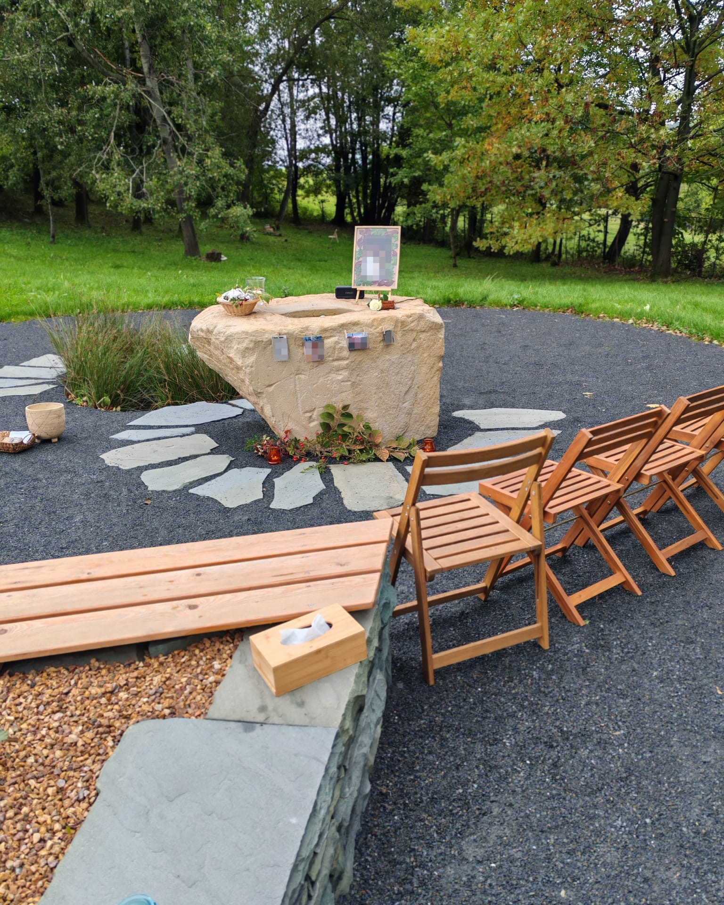
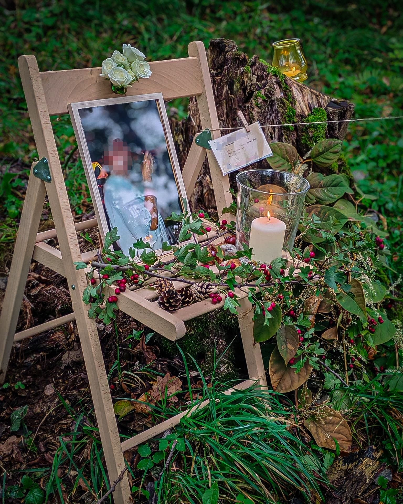
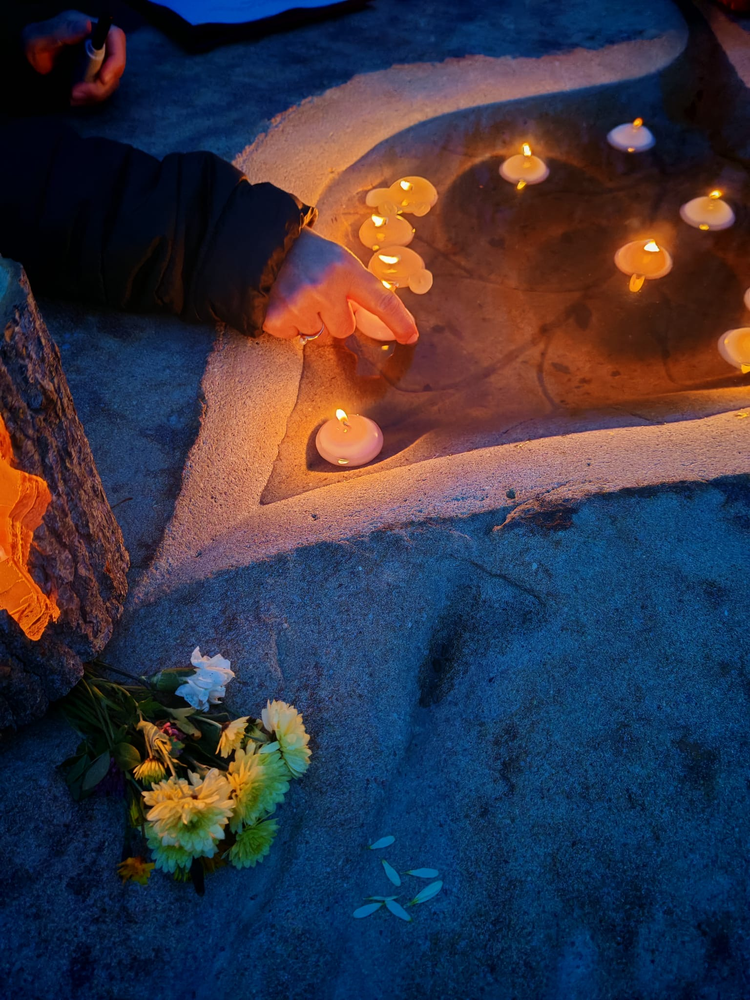
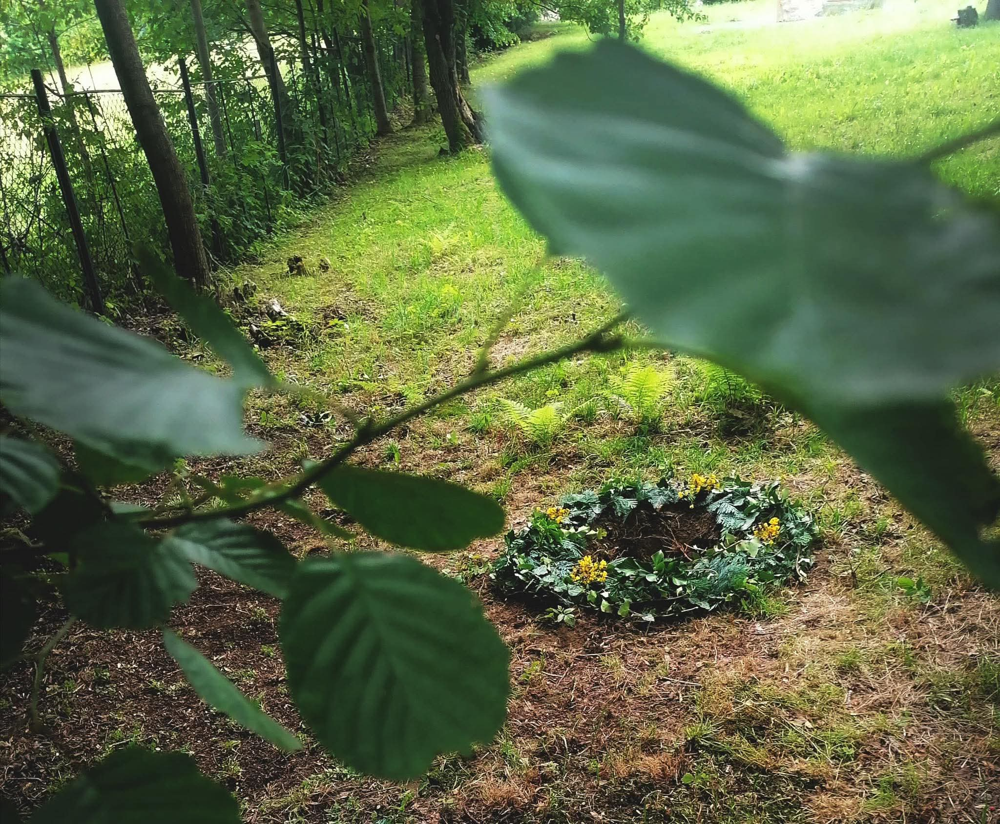
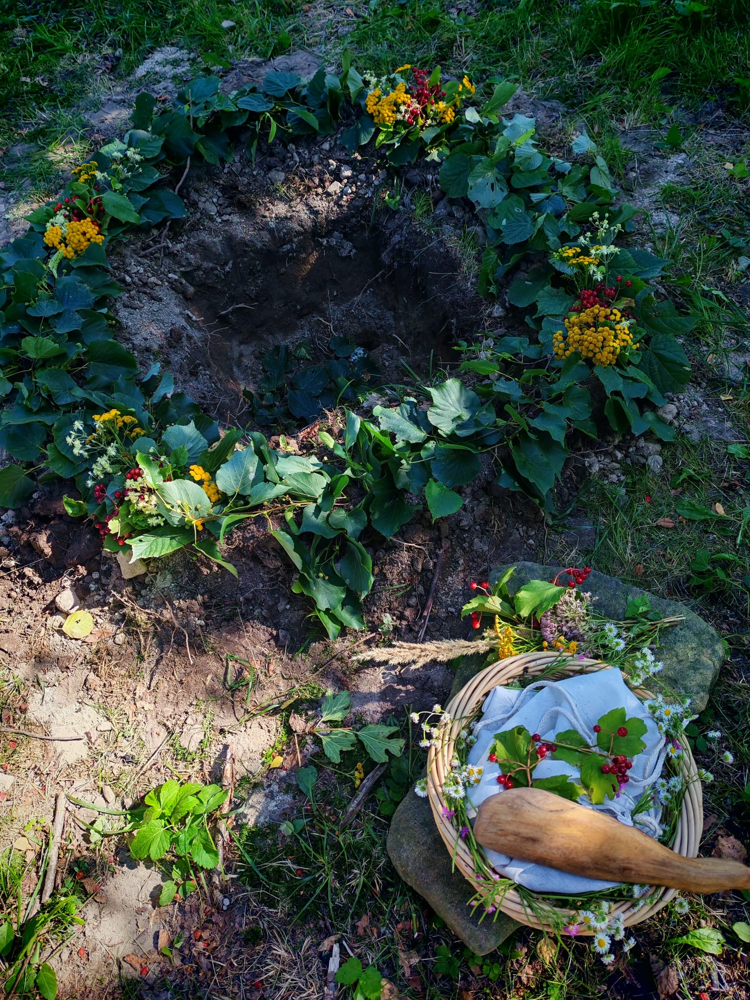

Věříme, že si každý zaslouží jedinečné a smysluplné rozloučení. Každý životní příběh si zaslouží dobrý konec s krásným smutečním obřadem, který může mít mnoho podob. Rády bychom s vámi vytvořily bezpečný prostor pro prožití smutku ze ztráty blízkého a provedly vás posledním rozloučením, které vám dává smysl.
Z naší kultury vymizelo mnoho svátků a obřadů. Smuteční obřad je jeden z mála, který zůstává napříč společností respektován. Spolu s vámi jej hodláme rozvíjet, dát mu nový obsah a přívětivější průběh, vřelý, lidský, laskavý. S námi můžete procesem rozloučení proplout s hlubokou úctou a láskou.
Poslední rozloučení může proběhnout na místě přírodního hřbitova Vzpomínky pod Lysou, ale také na kterémkoli místě, které máte rádi, nebo které zesnulý rád navštěvoval. Povzbudíme vás ve spolutvoření posledního rozloučení s rodinou nebo s přáteli, pokud vám to dává smysl. Můžeme tak společně vytvořit opravdové rozloučení s osobitým příběhem zemřelého.




